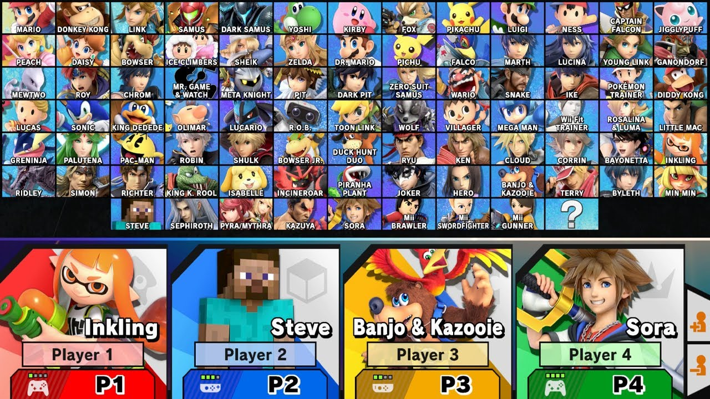
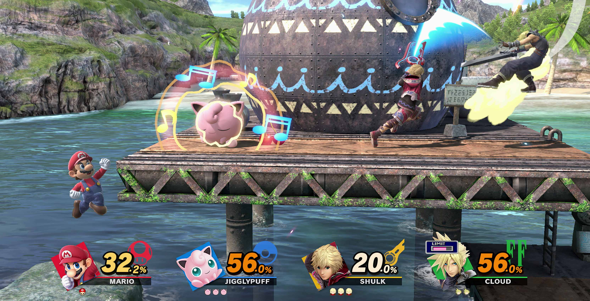
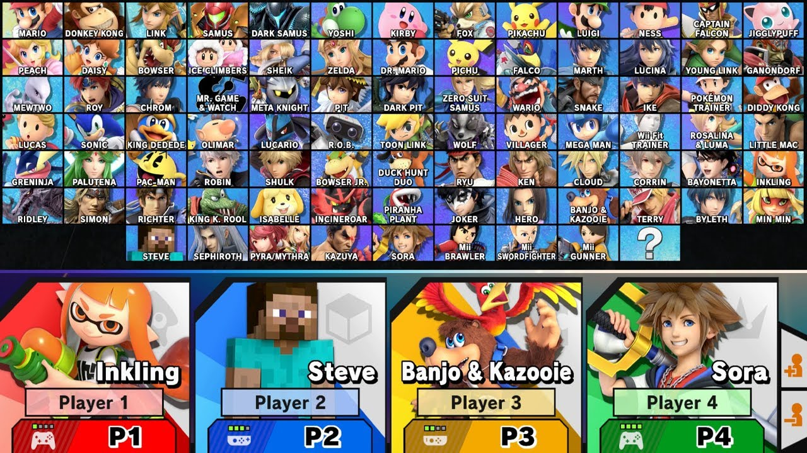
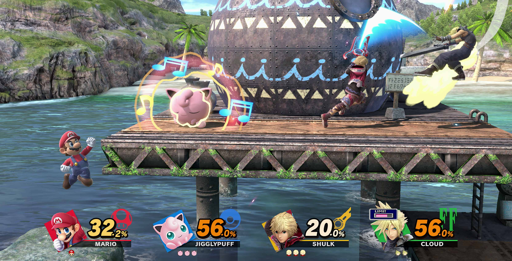

Super Smash Bros. Ultimate
Información del juego
Super Smash Bros. Ultimate (大乱闘スマッシュブラザーズ SPECIAL{{{2}}}, Dairantō Sumasshu Burazāzu Special?) es un videojuego de lucha desarrollado por Sora Ltd. y Bandai Namco Entertainment y distribuido por Nintendo para la consola Nintendo Switch. Fue lanzado a nivel mundial el 7 de diciembre de 2018 y se trata del quinto título de la serie Super Smash Bros.
Igual que sus predecesores, se trata de un juego de lucha donde hay que debilitar a los rivales para expulsarles de los márgenes del escenario. El plantel está formado por personajes de otros videojuegos, tanto de Nintendo como de otras desarrolladoras independientes, e incluye a todos los combatientes de entregas anteriores. Además, puede ampliarse con la compra de contenido descargable. Los trofeos coleccionables han sido reemplazados por los «espíritus», un nuevo concepto inspirado también en personajes de videojuegos, que permiten mejorar las características del luchador antes de un combate.
El título admite hasta ocho jugadores en modo local, se puede jugar en línea a través de Nintendo Switch Online, y es compatible con las figuras Amiibo y con Nintendo Labo.
El desarrollo de Ultimate comenzó en diciembre de 2015, bajo la dirección de Masahiro Sakurai y con buena parte del equipo que había hecho Super Smash Bros. para Nintendo 3DS y Wii U (2014), algo que redujo significativamente los tiempos de producción.
Sakurai logró su objetivo de incluir a todos los personajes que habían aparecido alguna vez en la entrega, un proceso complejo por el desarrollo técnico, por el equilibrio del plantel y por el coste de licencias.
Además de Nintendo, se llegaron a acuerdos con Bandai Namco, Konami, Sega, Capcom, Square Enix, PlatinumGames, Atlus, Microsoft, SNK, Disney y Mojang Studios.
Hay un total de 86 luchadores seleccionables —74 del plantel base y 12 de contenido descargable— y 450 juegos representados entre combatientes, espíritus y trajes para el luchador Mii.
Ultimate es el tercer título más vendido en la historia de Nintendo Switch, con 24,77 millones de copias en formato físico y digital.
Tuvo buenas reseñas de la prensa especializada, a pesar de algunas críticas relativas al multijugador en línea, y en términos generales ha sido considerada la mejor entrega de la saga Super Smash Bros. hasta la fecha. En 2019 fue premiado con el Game Awards al «mejor juego de lucha».
Reseñas
IGN
Increíble
"Super Smash Bros. Ultimate hace honor a su nombre y ofrece el juego más completo de la serie hasta la fecha. Tiene una cantidad absurda de cosas para jugar, luchar y desbloquear, aunque eso a veces puede ir en detrimento de él. Si bien el modo aventura World of Light no es el único motivo para conseguir Smash Bros., sigue siendo una campaña consistentemente divertida y sorprendentemente grande, y un digno complemento al increíble núcleo multijugador de Ultimate. La serie Smash Bros. siempre ha mantenido un maravilloso equilibrio entre diversión caótica y acción tensa de juego de lucha, y Super Smash Bros. Ultimate refina y mejora ambos lados sin abandonar ninguno de los dos."
"9.7 / 10"
Metacritic
Aclamado universalmente
"Basado en 110 reviews de críticas."
"Super Smash Bros. Ultimate logra cumplir con todas las expectativas que se le pusieron. La incorporación del maravilloso modo aventura, la inmensa cantidad de personajes jugables, así como espíritus y, para colmo, magníficas imágenes, audio y jugabilidad. Super Smash Bros. Ultimate no es solo uno de los mejores juegos que se pueden encontrar en Nintendo Switch, sino que también es uno de los mejores juegos jamás creados."
"93 / 100"
LevelUp
"9.7/10"
"Super Smash Bros. Ultimate se siente como la experiencia definitiva de la saga gracias a su robusta oferta single player; su frenético multijugador y su sólido sistema de combate. Además, es un juego ideal para cualquier tipo de jugador, desde el más casual hasta para el más clavado en su escena competitiva. Es un lanzamiento imprescindible para todo dueño de Nintendo Switch y tiene todo como para ser considerado uno de los mejores lanzamientos de Nintendo en la última década."
Imágenes y capturas del juego
 


